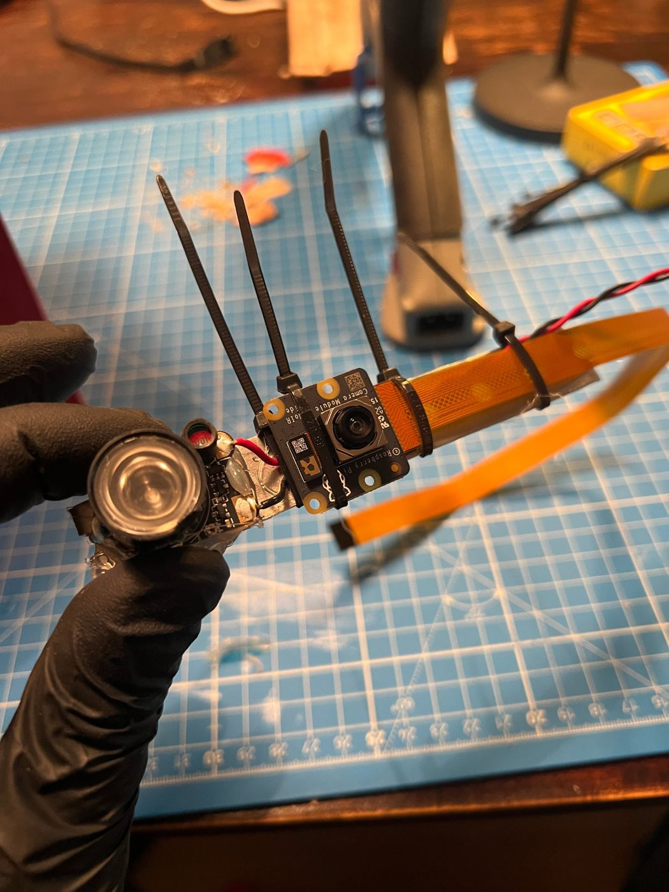
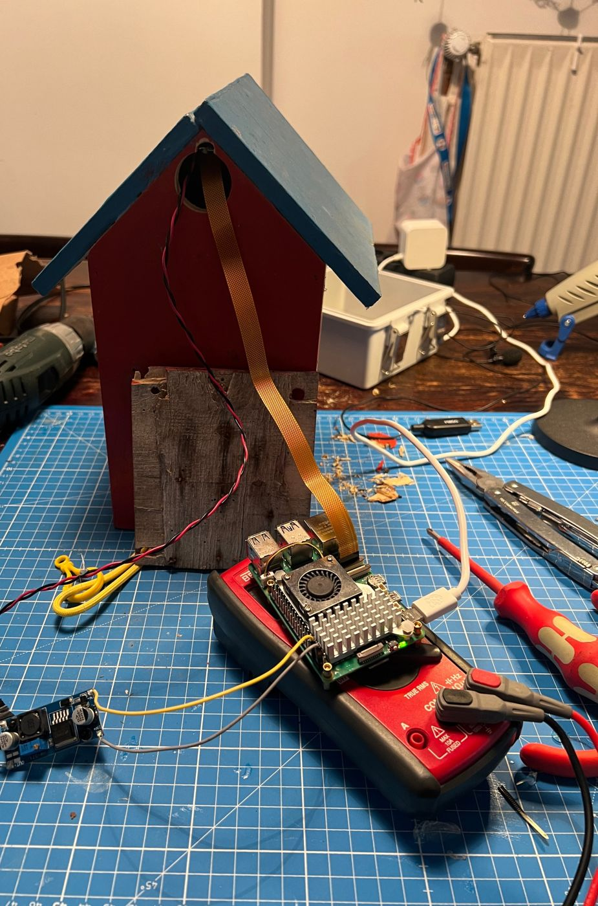
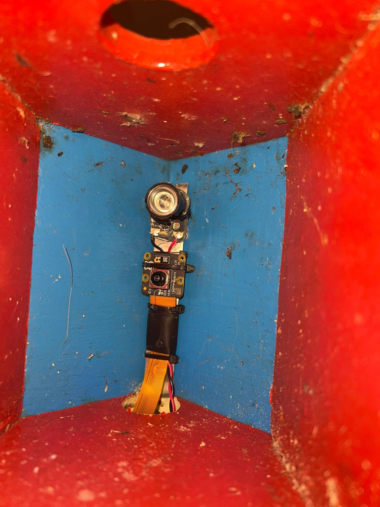
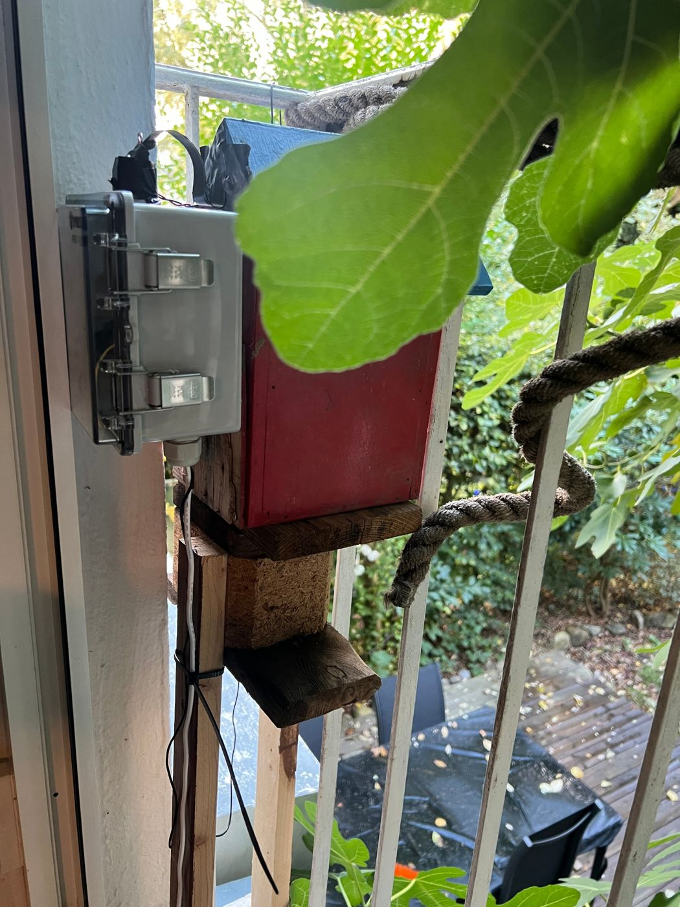
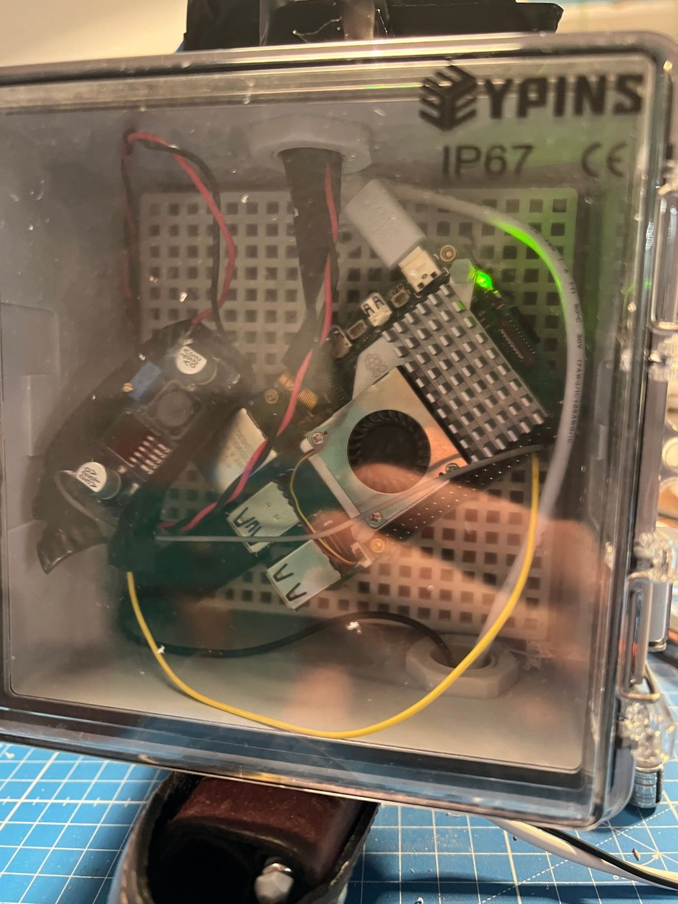

Hardware
Only the camera and the IR light sit inside the box. The Pi and the power regulator live in a weatherproof enclosure next to it, and the microphone hangs outside, so the nest stays free of electronics that can heat up.
Parts
| Part | Notes |
|---|---|
| Raspberry Pi 5 (4 GB) with active cooler | Raspberry Pi OS Lite, 64-bit. Powered by the official 27 W supply. |
| Weatherproof enclosure, IP67, clear lid | Holds the Pi and the voltage regulator, mounted next to the box. |
| Camera Module 3 Wide NoIR | No infrared filter, so it sees the IR light. Wide angle, which suits a small box. |
| Camera cable, 15-pin to 22-pin, 30 cm | The Pi 5 uses the smaller connector. |
| IR LED module, 850 nm | Cheap two-pack. Light-sensor (LDR) covered so it stays on permanently. |
| LM2596 buck converter | Lowers the voltage for the IR module. |
| USB lavalier microphone, omnidirectional | Mounted outside, for BirdNET-Pi. |
| SD card, 64 GB, high endurance | A "high endurance" card is meant for continuous writing, which this project does all day. |
| Tit nest box | About 25 cm high and 14 cm wide. Little light inside. |

The IR light
The module is fed from the Pi through the LM2596: 5 V from pin 2, ground from pin 6, adjusted to about 2.9 V. At that voltage it is bright enough for the camera and stays much cooler than at full power. It is on permanently, with the light sensor covered; no MOSFET or switching circuit.
Bench test before mounting

Before anything went into the box, camera and IR light ran together in a dark room: Pi at about 48 °C, no throttling. Check the same on yours:
vcgencmd measure_temp
vcgencmd get_throttled # 0x0 is goodA value of 0x50000 directly after boot means that the supply voltage dipped below the limit at some point since startup (undervoltage, and throttling because of it). If it shows only right after boot and never again, it is harmless; a stronger power supply or a shorter, thicker cable would remove it.

Pi and regulator outside
The Pi with its active cooler and the LM2596 sit in a weatherproof enclosure with a clear lid, fastened next to the box. Two cables go into the nest box through a hole: the flat camera ribbon and the two wires for the IR light. A green LED on the Pi is visible through the lid, which makes a quick look from the window enough to see that it is alive.


Mains power
The Pi is powered from an outdoor socket about 2–3 m below the box. Anything involving mains voltage outdoors should be done by a qualified electrician, with a residual-current device in the circuit and a weatherproof enclosure for the supply.